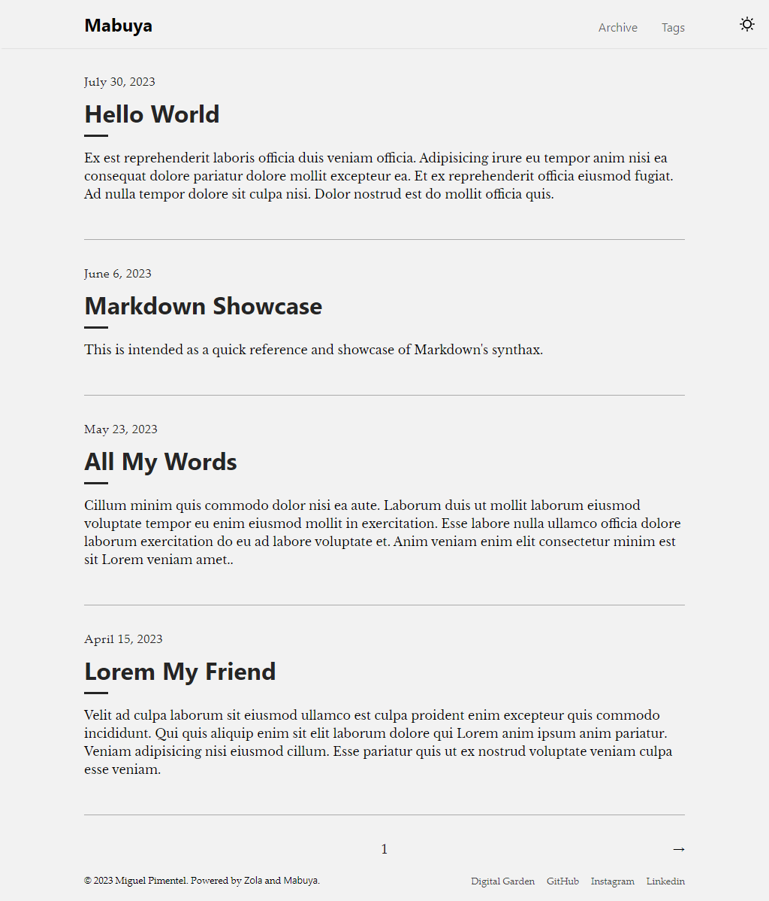

🦎 Mabuya


Introduction
Mabuya is a minimal Zola theme focused on helping you build an elegant, fast, lightweight, and SEO-ready blog. Put your work front and center with Mabuya as the base of your project.
Check out the live demo of the theme.
Screenshots
Start of Mabuya
While searching for themes, I came across Zola Tale. Sadly, the project's last update was on Dec 4, 2021. Shortly after, I decided to fork the project and add my own touches to it.
Where The Name Comes From
The name Mabuya comes from the Mabuya hispaniolae, a possibly extinct1 species of skink endemic to the Dominican Republic, my home country.
Features and Improvements
While working on the theme, I have added new functionality and many quality of life improvements. Here's a short non-inclusive list:
- Fully refactored stylesheets.
- Added Dark theme and color scheme toggle.
- Added new footer navigation.
- Created a custom GitHub Action to deploy Zola sites. It is faster than any other in GitHub Actions doing the same.
- Refined page transitions from desktop to mobile and viceversa.
- Centralized custom variables. Made it easier to customize make color changes to the site.
- Addressed PR #7. Fixes pagination problem addressed since the theme was updated.
- Addressed (temporarily) Issue #1 by removing the erroneous pinned marker. I have yet to implement it in this theme.
- Addressed Issue #4 fixing custom text not being used correctly.
- Optimized for speed and Accesibility.
- Many other small improvements...
Running the Site Locally
Tips that will help you develop and preview the site locally.
Requirements
Before using the theme, you need to install Zola ≥ 0.18.0.
Quick Start
# clone the repo
git clone git@github.com:semanticdata/mabuya.git
# change directory into the cloned folder
cd mabuya
# serve the site locally
zola serve
# open http://127.0.0.1:1111/ in the browser
For more detailed instructions, visit the Documentation page about installing and using themes.
Useful Commands
A short list of commands that will help you develop your own version of the theme.
| Command | Description |
|---|---|
zola init <my-repo> | Initiate new Zola site |
zola build | Build only |
zola serve | Build and Serve |
Customization
You can changed the configuration, templates and content yourself. Refer to the config.toml, and templates files for ideas. In most cases you only need to modify the contents of config.toml to customize the appearance of your blog. Make sure to visit tyhe Zola Documentation.
Custom CSS Styles
Adding custom CSS is as easy as adding your styles to sass/_custom.scss. This is made possible because SCSS files are backwards compatible with CSS. This means you can type normal CSS code into a SCSS file and it will be valid.
Reporting Issues
We use GitHub Issues as the official bug tracker for Mabuya. Please search existing issues. It’s possible someone has already reported the same problem.
If your problem or idea is not addressed yet, open a new issue.
Contributing
We'd love your help! Please see CONTRIBUTING to learn about the kinds of contributions we're looking for.
Please read and be aware of the Code of Conduct before conttributing.
Acknowledgements and Attributions
Mabuya is a fork of Tale, which is a port of the Jekyll theme Tale—a now Archived repository.
The icons used throughout the site are kindly provided by UXWing. Read their license.
Other icons used come from Remix Icon. Check out their license.
License
Source code in this repository is available under the MIT license. You are free to use this code however you like. That said, some acknowledgement would be well received.
Mabuya hispaniolae's conservation status is Critically endangered, possibly extinct.